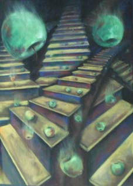

پذيرش > کمپین در بند > پروین اردلان،جلوه جواهری، مریم حسین خواه، ناهید کشاورز > نمايشگاه آثار جلوه جواهري با هدف كمك به زنان زنداني برگزار شد


 نمايشگاه آثار جلوه جواهري با هدف كمك به زنان زنداني برگزار شد نمايشگاه آثار جلوه جواهري با هدف كمك به زنان زنداني برگزار شد
11 دی 1386 - - نسخه قابل چاپ
تغيير براي برابري-آيدا سعادت: "ياري به زنان زنداني عادي" عنوان نمايشگاهي از آثار جلوه جواهري بود كه پنجشنبه گذشته (ششم دي ماه) با هدف كمك به زنان زنداني برپا شد. جلوه جواهري وب نگار و از اعضاي كمپين يك ميليون امضا كه از ماه گذشته به اتهام انتشار مقالات و نوشته هايش در سايت هاي اينترنتي در زندان اوين به سر ميبرد، قصد دارد با عوايد حاصل از فروش آثار نقاشي خود صندوق حمايت از زنان زنداني را تاسيس كند.
جلوه جواهري كار نقاشي را به صورت حرفه اي از سال 1375 شروع كرده است و در آثار وي به وضوح مي توان دغدغه هايش نسبت به مسائل زنان را ديد و حس كرد. در نمايشگاه "ياري به زنان زنداني عادي" كه مورد استقبال جمع كثيري از هنرمندان و خيرين قرار گرفت مه لقا ملاح و فرزانه طاهري مدير عامل بنياد گلشيري و تعدادي از هنرمندان و نقاشان و نيز خبرنگاران داخلي و خارجي از آثار جلوه جواهري بازديد كردند.
اين نمايشگاه بار ديگر در بيستم دي ماه در گالري طراحان آزاد برپا خواهد شد و اين بار تعدادي ديگر از نقاشان به اين حركت پيوسته و جهت تامين بودجه ي اوليه ي " صندوق ياري به زنان زنداني عادي" به همراه جلوه جواهري تابلوهاي خود را در معرض فروش خواهند گذاشت.

كاوه مظفري همسر جلوه جواهري در اين رابطه مي گويد حضور ناخواسته ي جلوه در ميان زنان زنداني بند مالي زندان اوين باعث شد كه وي براي كمك به آنان گام بردارد: "ايده ي تاسيس صندوق ياري به زنان زنداني عادي پس ازانتقال جلوه به بند مالي زندان زنان اوين و طي يك صحبت مشترك شكل گرفت. جلوه در زندان شاهد مشكلات مالي برخي از اين زنان بود و قصد داشت به آنها كمك كند اما جمع آوري بودجه كار آساني نبود و به اين نتيجه رسيد كه از طريق تاسيس يك صندوق براي اين امر مي تواند ضمن بيان كردن وضعيت و مسائل اين زنان اقدام به جمع آوري كمك براي آنان نمايد."
كاوه مظفري ادامه داد:"كارهاي خيريه اي از اين دست هر چقدر كوچكتر باشند به همان ميزان نيز از تاثير گذاري كمتري برخوردارند اما با اينگونه اقدامات مي توان تاثير ان را بيشتر كرد و با ترغيب افراد ديگر جامعه را متوجه ي نيازهاي اين دسته زنان زنداني نمود."
همسر جلوه همچنين گفت جلوه از برپايي اين نمايشگاه بسيار خوشحال است و اميدوار است كه اين اقدام بتواند موجبات رهايي زناني كه به خاطر مبالغ اندكي در زندان به سر مي برند را فراهم كند و همچنين منبع مالي مناسبي براي تامين نيازها و هزينه هاي مالي آن دسته از زنان زنداني شود كه حبس هاي طولاني مدت دارند و قادر به تامين هزينه هاي اوليه ي خود در داخل زندان نيستند. پيش از اين جلوه با اهداء هديه ي ازدواج خود بدهي پيرزن هفتاد ساله اي كه به خاطر 500 هزار تومان در زندان بود را پرداخت كرد و قرار بود اين زن طي روزهاي اخير از زندان آزاد شود.
دوستان جلوه و همسرش بر اين باورند كه برپايي اين نمايشگاه و استقبال خوبي كه از آن شد نشان مي دهد فضاي مساعدي براي توسعه ي صندوق ياري وجود دارد . طرحي كه از حضور ناخواسته ي جلوه و مريم در زندان شروع شد مي تواند تنها نقطه ي شروعي باشد براي كساني كه تمايل دارند در اين اقدام انسان دوستانه به ياري زنان زنداني بشتابند. زناني كه در بسياري از موارد تبعيض و يا فقر مالي موجب شده است سالهاي مديدي را به خاطر عدم توان در پرداخت مبلغ اندك در زندان بمانند و يا در سالهاي حبس خود از هيچگونه كمك مالي براي تامين هزينه هاي ضروري خود برخوردار نباشند.
جلوه جواهري و مريم حسين خواه كه باني اين اقدامات انسان دوستانه براي زنان زنداني بوده اند حتي در گزارش هايي كه از درون زندان نوشته اند اشاره كرده اند با وجود اين كه اولويت آنان همچنان فعاليت در كمپين يك ميليون امضا براي تغيير قوانين تبعيض آميز خواهد بود اما همچنان به حمايت از زنان زنداني ادامه خواهند داد.
منصوره شجاعي به همراه چند تن ديگر از دوستان جلوه مقدمات لازم براي برپايي نمايشگاه را فراهم كردهاند: "در واقع از زماني كه جلوه و مريم بازداشت و به زندان اوين منتقل شدند با طرح ايده هاي خود سعي كرده اند گره اي از مشكلات بي حساب زنان زنداني بگشايند و به هر شكل ممكن به آنان كمك كنند. مريم حسين خواه از روزهاي اوليه حضورش در بند زنان زندان اوين پيشنهاد تجهيز كتابخانه اي "مخاطب مدار" مطابق با نيازها و سليقه ي زنان زنداني را داد كه با حمايت كتابخانه ي صديقه ي دولت آبادي و جمع آوري كمك افرادي كه علاقمند به اين حركت بودند اين ايده شكل عملي به خود گرفت . اقداماتي كه در اين راستا انجام گرفته اند زير نظر كتابخانه ي صديقه دولت آبادي و خود خانم شجاعي و خانم شادفر اداره مي شود."
شجاعي ادامه داد: "جلوه نيز از وقتي به بند مالي زندان زنان منتقل شد با ديدن مشكلات زنان تصميم گرفت صندوق ياري به زنان زنداني را بنيان نهد. جلوه پيشنهاد خود را با دوستان و همسرش در خارج از زندان مطرح نمود و پيشنهاد داد گامي عملي در جهت حمايت از زناني كه آسيب ديده ي اجتماعي هستند و با مبالغ ناچيزي مي توانند آزاد شده و يا مورد حمايت قرار گيرند برداشته شود. وي با طرح ايده ي فروش تابلوهاي نقاشي اش براي تامين سرمايه ي اوليه صندوق ياري به زنان زنداني عادي اولين قدم را برداشت و حالا شاهديم كه تعدادي از افرادي كه در تجهيز كتابخانه ي زنان زنداني كمك كردند براي حمايت از اين حركت نيز اعلام آمادگي كرده اند."
شجاعي در مورد نحوه ي تخصيص عوايدي كه از فروش تابلوهاي نقاشي جلوه به دست مي آيد به زنان زنداني توضيح داد: "جلوه افراد خاصي را در زندن شناسايي كرده و با آنها حرف زده و در جريان نيازهاي آنان هست و با توجه به ضرورت ها و نيازهاي موجود معيارهايي را براي كمك به آنان در نظر گرفته است . اين حركت مي تواند مقدمه اي براي شروع اقدامات بعدي و بزرگتر باشد. "
اين عضو كمپين يك ميليون امضا در مورد انگيزه و اهداف جلوه از اين حركت گفت: "جلوه فردي است كه به جنبش زنان و به طور خاص كمپين يك ميليون امضا براي تغيير قوانين تبعيض آميز متعلق است. همه ما مي دانيم كه جنبش زنان جنبشي مدني و حقوقي است بنا بر اين حساسيت هاي افراد نسبت به زندگي و برخورداري از حقوق شهروندي طي اين فعاليت ها بالا مي رود بارها ديده ايم كه كنشگران جنبش زنان همواره محيط پيرامون خود را متاثر مي كنند . وقتي فردي به اين نوع نگاه مجهز شد گاه به انجام مطالعات تئوريك و نظري مي پردازد و گاه ممكن است به اقدامي عملي دست بزند. جلوه نيز با دقت مسائلي را كه مانع برخورداري از حقوق انساني زنان زنداني مي شود يا مواردي كه ناشي از تبعيض هاي جنسيتي در وقوع جرم شده است را با همين ديد برابري خواهانه ي خود موشكافي كرده و نسبت به آن كنش مناسب نشان ميدهد."
برگزاري اين نمايشگاه گرچه با طرح و ايده ي جلوه جواهري و كمك هاي همسر و دوستانش ممكن شد، اما بي ترديد ياري مسئول گالري طراحان آزاد خانم رزيتا شرف جهان كه با در اختيار گذاشتن گالري خود سبب ساز شروع اين اقدام انساني شد نقش موثري در تحقق آن داشت. وي اولين كسي بود كه با توجه به وضعيت زنان زنداني عادي دست جلوه و دوستانش را فشرد و در راه كمك به آنان همت كرد.
رزيتا شرف جهان در باره ي اين اقدام خود مي گويد: "اقدامات اوليه از طرف جلوه و همسر و دوستانش شكل گرفته بود و تنها مشكلي كه براي اجرا وجود داشت فضاي گالري بود كه با توجه به حجم كاري فشرده توانستيم يك روز را به اين برنامه اختصاص دهيم ."
وي با اشاره به حضور نقاشان ديگر و نيز استقبال گسترده اي كه از اين اقدام شده است گفت : " نقاشاني كه معمولا در اين گالري نمايشگاه داير مي كنند فروش خوبي دارند و در اين نمايشگاه نيز كارهاي خود را در جهت حمايت از اين حركت ارائه كرده اند. اما اگر تبليغات بيشتري انجام مي شد و فرصت بيشتري بود مي شد از همكاري تعداد بيشتري از هنرمندان برخوردار شد و با فروش واقعي و بهتر كمك بيشتري به اين حركت كرد."
مدير گالري طراحان تهران با برپايي اين نمايشگاه در هفته هاي آتي موافقت كرده است.
رضا هدايت يكي از نقاشاني كه با ارائه ي چند اثر نقاشي خود به كمك جلوه و دوستانش آمده است در خصوص انگيزه ي خود از اين اقدام مي گويد : " اين كار مي تونه كمكي باشه به زنان زنداني كه توان پرداخت بدهي ها و هزينه هاي مالي خود را در زندان ندارند."
جلوه جواهري به همراه مريم حسين خواه دو عضو كمپين يك ميليون امضا براي تغيير قوانين تبعيض آميز در طول بيش از يك ماه گذشته از نزديك شاهد درد ورنج زنان زنداني بوده كه عمدتا قرباني قوانين تبعيض آميز هستند . حضور ناخواسته و غير منتظره ي مريم وجلوه در زندان اوين اين دو را بر آن داشت تا دست ياري به سوي زنان زنداني دراز كنند و برگزاري اين نمايشگاه در همين راستا صورت مي گيرد تا كساني كه خواهان كمك به زنان زنداني هستند از طريق اين نمايشگاه و خريد تابلوها در اين امر انسان دوستانه آنان را ياري دهند.
ارسال به
بالاترین
،
توییتر
،
فریندفید
،
فیسبوک
در همين بخش :
 بهاره هدایت را آزاد کنید؛ درخواست ۴۵۵ تن از فعالان زنان، دانشجویی واجتماعی از قوه قضاییه بهاره هدایت را آزاد کنید؛ درخواست ۴۵۵ تن از فعالان زنان، دانشجویی واجتماعی از قوه قضاییه
بیانیه بیش از ۱۵۰ تن از مدافعان حقوق بشر بین المللی برای آزادی بهاره هدایت و مریم شفیع پور
ششمین روز از کمپین «ده روز با بهاره هدایت» با عنوان «روز سلامت»
پیام ضیا نبوی و مجید دری از زندان کارون اهواز به کمپین«ده روز با بهاره هدایت»
روز پنجم از کمپین ده روز با بهاره هدایت:« بهاره، یک فرزند و یک خواهر است»
ديگر بخش ها :
طرح یک میلیون امضا
|
مقالات
|
سایت نوشته ها
|
اخبار
|
گزارش كمپين
|
گفت و گو
|
علیه سکوت
|
كوچه به كوچه
|
نامه های شما
|
گزارش ویژه
|
گفتگو با اعضا
|
ویژه سالگرد کمپین
|
تصویر برابری
|
دل آرام علی
|
تریبون
|
مقالات
|
تاریخ شفاهی
|
خارج از چارچوب
|
کتابخانه
|
درباره کمپین
|
کمپین در شهرها
|
کمپین در بند
|
صدای تغییر
|
ویژه 22 خرداد
|
لایحه حمایت از خانواده
|
گالری
|
عشا مومنی
|
امیر یعقوبعلی
|
خدیجه مقدم
|
راحله عسگری زاده و نسیم خسروی
|
پروین اردلان،جلوه جواهری، مریم حسین خواه، ناهید کشاورز
|
زینب پیغمبرزاده
|
سعیده امین، سارا ایمانیان، محبوبه حسین زاده، ناهید کشاورز و همایون نامی
|
احترام شادفر
|
نسیم سرابندی زاده،فاطمه دهدشتی
|
وبلاگ مهمان
|
پرونده خرم آباد
|
دستگیری ها
|
مریم مالک
|
پرستو اللهیاری
|
مهرنوش اعتمادی
|
سمیه رشیدی
|
Other Languages
|
همراهان
|
«فراخوان کمپین ده روز با بهاره هدایت»
| English
|